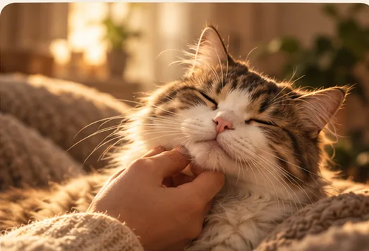
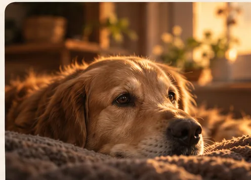

The walks you remember
Not every memory is a photograph.
Sometimes it is the route, the pace, the stop at the same corner, or the small glance back to make sure you are still there. A photograph catches a moment. The story around it belongs to you.
Notes from WornTag
A favourite window. The soft thump of paws down the hall. The look that says it is time for a walk. The smallest details can become the ones that stay with us.
These are editorial reflections, not customer testimonials. WornTag has not published customer stories.
The walks you remember
Sometimes it is the route, the pace, the stop at the same corner, or the small glance back to make sure you are still there. A photograph catches a moment. The story around it belongs to you.

The pets beside us now
The familiar rituals are easy to overlook: a warm spot on the sofa, a greeting at the door, the particular way they settle beside you. WornTag is being made to celebrate that everyday closeness, too.

Keeping a photo close
Technology can create a likeness to revisit; it cannot return an animal or speak for them. We believe an honest keepsake can feel meaningful without pretending to be more than it is.
The WornTag idea
WornTag is in development. See how the companion is intended to work and what is still to come.
Explore the idea